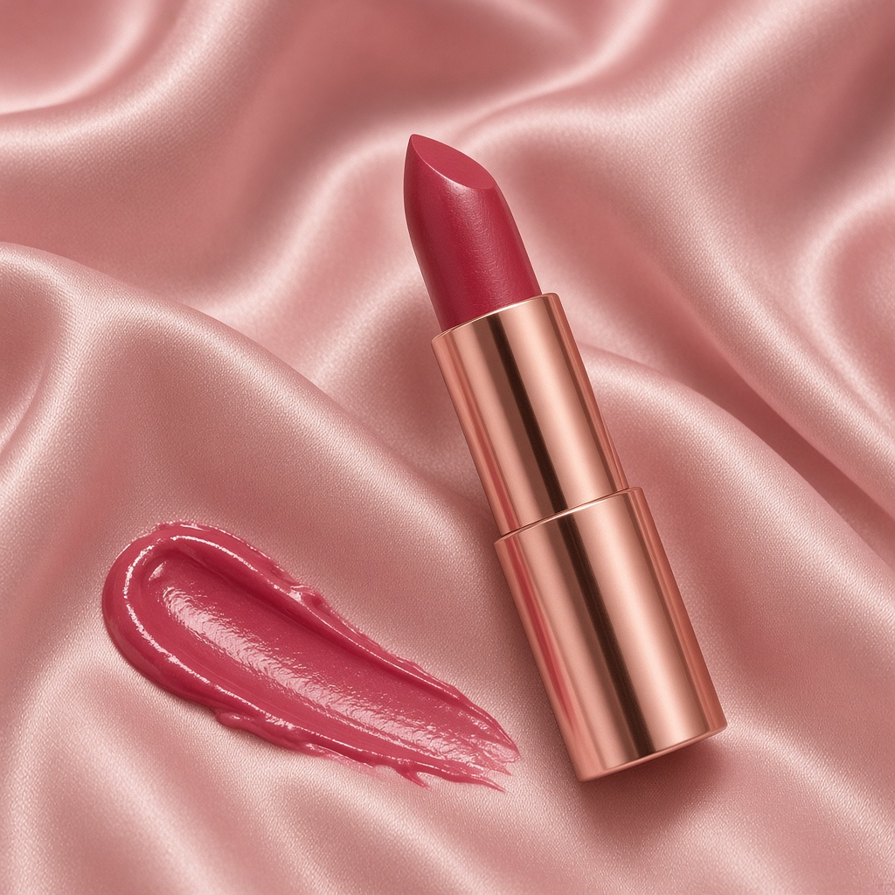

YSL · 圆管口红 · 12 ｜ 斩男粉 · 润泽 ｜ 参考价 ¥350
下面是示意图，不是实拍保证。屏幕有色差，下手前请对照实物试色。
圆管 12 是暖粉红，带一点红，被叫斩男色是因为上嘴嫩、有血色，不像正红那么攻击。黄皮多数能涂；冷皮有时偏假粉。唇色深会把粉色吃暗，建议涂两层或先把唇色按掉。圆管膏体润、香，显唇纹少，但真的不持久，吃饭一口就没，口罩印很重。约会、春天最合适，上班也可以，别指望它撑过午饭。专柜大约 350 元。
广告 · 点购买或用淘口令进店，下单并结算后可能产生佣金
淘口令（复制后打开淘宝 APP 粘贴）：
48￥ MF278 VlA3TQi94lu￥
